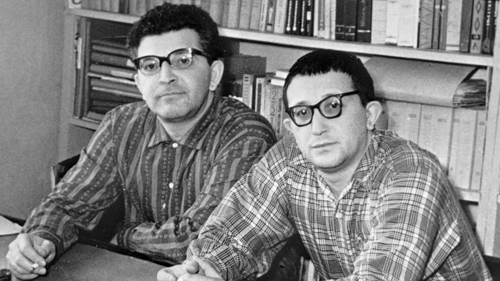
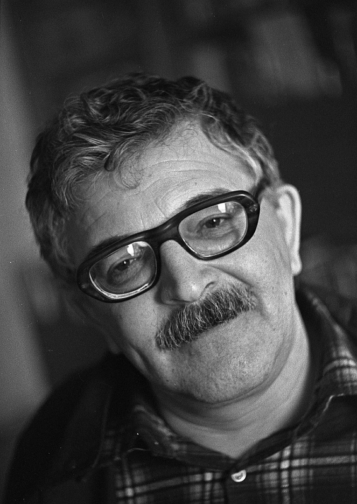
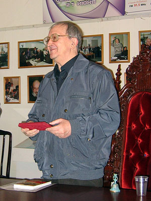

 Братья Стругацкие — тандем советских и российских писателей, сценаристов, классиков современной научной и социальной фантастики.
Аркадий Натанович Стругацкий (28 августа 1925, Батуми — 12 октября 1991, Москва)  Аркадий Стругацкий являлся членом редколлегий различных сборников и периодических изданий
 Борис Натанович Стругацкий (15 апреля 1933, Ленинград — 19 ноября 2012, Санкт-Петербург) После того как в 1991 году умер его брат и соавтор А. Н. Стругацкий, Борис Стругацкий опубликовал два самостоятельных романа (под псевдонимом «С. Витицкий») и книгу